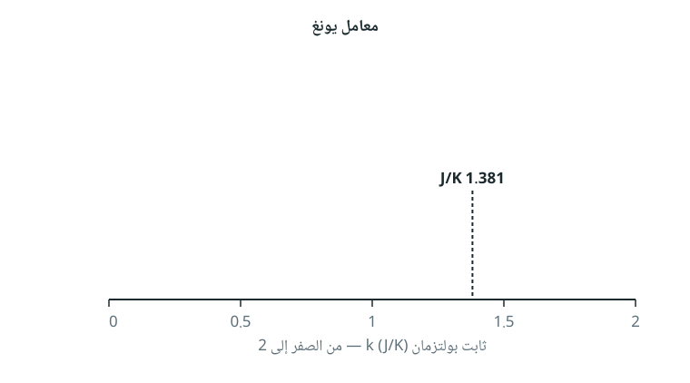

معامل يونغ
Young's modulus
معامل يونغ هو نسبة الإجهاد الشدّي إلى الانفعال في المدى المرن، ورمزه E ووحدته الغيغاباسكال. يقيس صلابة المادة لا قوتها، ويحدد مقدار تشوّهها تحت حمل معين.
معامل يونغ، ورمزه E، هو نسبة الإجهاد الشدّي إلى الانفعال الشدّي في المدى الخطي المرن من منحنى الإجهاد-الانفعال. وحدته غيغاباسكال عادةً، وهو وحدة إجهاد لا وحدة نسبة، لأن الانفعال بلا وحدة. وهو يقيس صلابة المادة أي مقاومتها للتشوّه المرن، لا مقاومتها للانهيار: الفولاذ عالي المقاومة والفولاذ الطري قد يكون لهما معامل يونغ نفسه تقريباً، لأن الصلابة خاصية الروابط الذرية لا خاصية المعالجة الحرارية. وهذا التمييز جوهري في التصميم: معامل يونغ يحدد الانحراف والترخيم، ومقاومة الخضوع تحدد الأمان من الانهيار. مثال: سلك فولاذي E = 200 GPa وطوله 2.0 m ومقطعه 1.0 mm² يحمل 100 N يستطيل بمقدار 1.0 mm.
كيف تعمل الظاهرة؟
معامل يونغ ينشأ من صلابة الروابط بين الذرات. حين يُشدّ جسم، تتباعد الذرات قليلاً عن موضع توازنها، فتقاوم الروابط هذا التباعد بقوة تتناسب مع مقدار الإزاحة في المدى الصغير. ولأن كل ذرة محاطة بعدد ثابت من الجيران، فإن صلابة الرابطة الواحدة مضروبة في عدد الروابط في وحدة المساحة تعطي معامل يونغ. هذا يفسّر لماذا يكون E خاصية بنيوية للشبكة البلورية لا خاصية للمعالجة الحرارية: المعالجة تغيّر العيوب والحدود بين الحبيبات فترفع مقاومة الخضوع، لكنها لا تغيّر صلابة الروابط نفسها إلا قليلاً. ويفسّر أيضاً لماذا تنخفض E قليلاً بارتفاع الحرارة، لأن التمدد الحراري يزيد المسافات فيضعف الروابط.
العلاقة بالأرقام
E = σ/ε بوحدة Pa. والاستطالة المرنة ΔL = F·L₀/(A·E). والعلاقة بمعامل القص G ومعامل بواسون ν: G = E/(2(1+ν)). والعلاقة بمعامل الحجم K: K = E/(3(1−2ν)). مثال عددي: سلك فولاذي E = 200 GPa، L₀ = 2.0 m، A = 1.0×10⁻⁶ m²، F = 100 N: σ = 100 MPa، ε = 5.0×10⁻⁴، ΔL = 1.0 mm. ولو كان السلك ألومنيومياً بـE = 70 GPa لكانت الاستطالة 2.86 mm، أي 2.86 ضعفاً بالحمل نفسه.
مفاهيم متقاربة
معامل يونغ ليس مقاومة الخضوع ولا مقاومة الشدّ: الأول يصف الميل المرن، والثانية والثالثة تصفان حدود الانهيار. وليس الصلادة السطحية. وليس معامل القص ولا معامل الحجم، وإنما ترتبط الثلاثة بمعامل بواسون. والخطأ الشائع أن يُستعمل E للتنبؤ بالحمل الأقصى؛ E لا يخبر عن الحمل الأقصى بل عن الانحراف عند حمل معلوم. وأخيراً معامل يونغ ليس ثابتاً في كل الاتجاهات في المواد متباينة الخواص كالخشب والألياف.
حدود التطبيق
معامل يونغ معرّف في المدى المرن الخطي فقط، ولا معنى له بعد الخضوع. وفي المواد المطاطية والبوليمرات يكون المدى الخطي ضيقاً جداً، فيُستعمل معامل تخزين ديناميكي بدلاً منه. وفي المواد متباينة الخواص كالخشب والمواد المركّبة، يختلف E بحسب اتجاه الحمل، فيلزم معامل لكل اتجاه. وفي الخرسانة يعتمد E على العمر والرطوبة، فالقيمة الواحدة تقريب. ولا يُستعمل E للتنبؤ بالزحف أو الاسترخاء، فذلك سلوك زمني مستقل.

| الكمية | القيمة | المصدر |
|---|---|---|
| الإجهاد في المثال | 100 MPa | [1] |
المصادر
- 1 The International System of Units (SI), 9th edition (2019) — BIPM — Bureau International des Poids et Mesures (2019). www.bipm.org/en/publications/si-brochure · اطُّلع عليه 2026-11-21
- 2 CODATA Value: Boltzmann constant — NIST — CODATA 2022 recommended values (2024). physics.nist.gov/cgi-bin/cuu/Value?k · اطُّلع عليه 2026-11-21
- 3 CODATA Value: Avogadro constant — NIST — CODATA 2022 recommended values (2024). physics.nist.gov/cgi-bin/cuu/Value?na · اطُّلع عليه 2026-11-21
استشهد بهذا المصطلح
الصيغتان مبنيتان من بيانات الصفحة نفسها: العنوان والتاريخ ورابط النسخة المنشورة.
معامل يونغ — Young's modulus. (2026). ديوان المعرفة — انفراد. https://infiradev.com/diwan/terms/term-youngs-modulus.html
@misc{term-youngs-modulus2026,
title = {معامل يونغ},
titleaddon = {Young's modulus},
howpublished = {{ديوان المعرفة — انفراد} — مرجع علمي عربي},
year = {2026},
url = {https://infiradev.com/diwan/terms/term-youngs-modulus.html},
urldate = {2026-11-26},
note = {مراجعة علمية: hermes (مراجعة معتمدة 2026-11-26)}
}
راجعه: hermes (مراجعة معتمدة 2026-11-26) · 2026-11-26 · آخر تحديث 2026-11-21